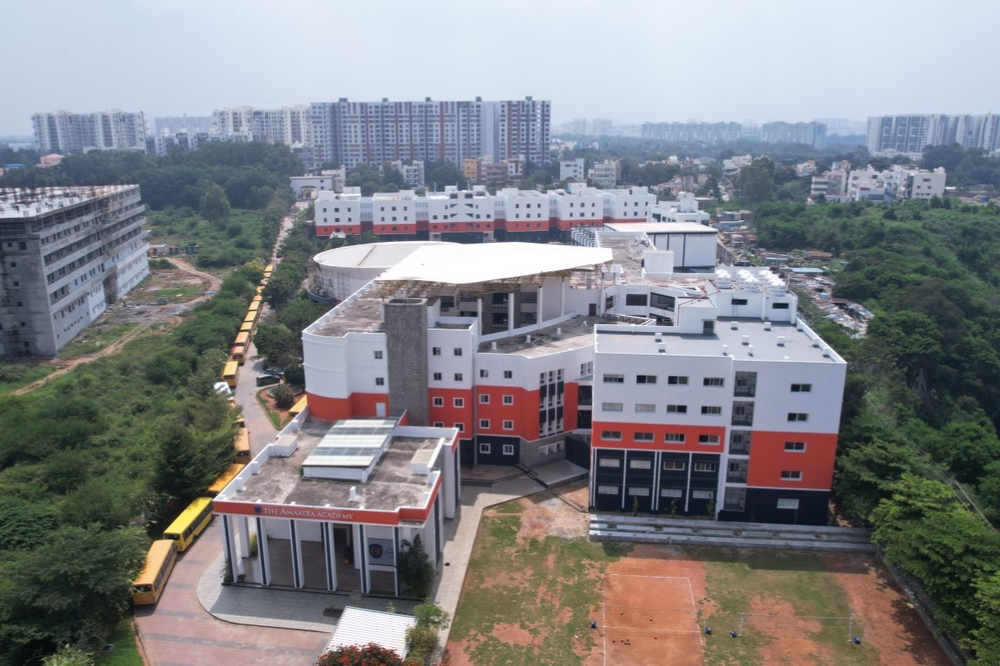
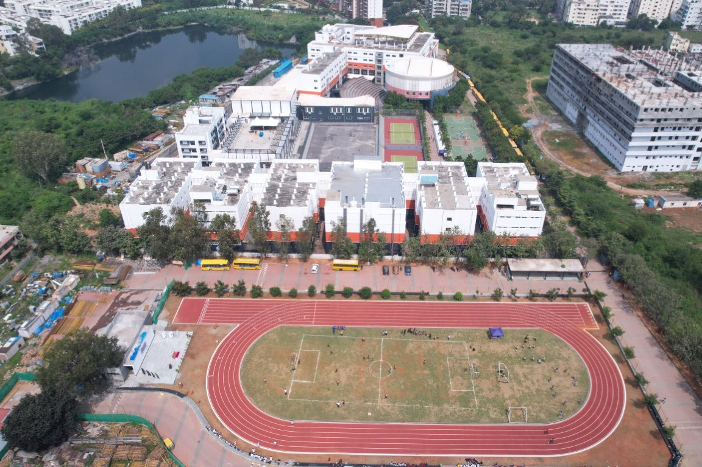
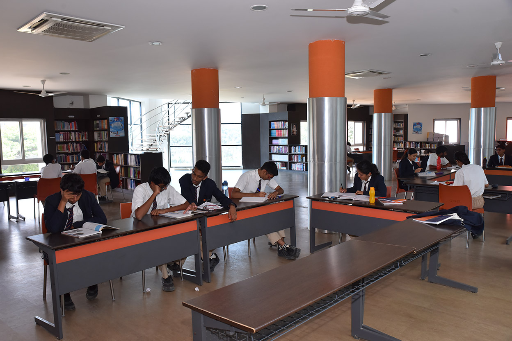
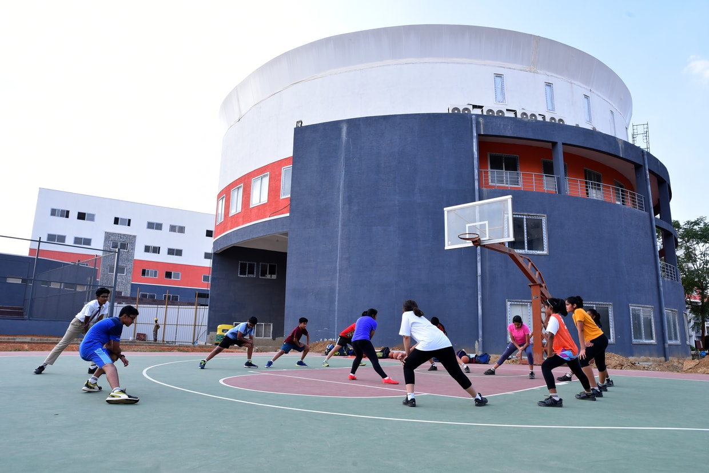

Amaatra Academy

A distinguished college preparatory school with comprehensive residential facilities, established by the prestigious PES group of institutions, this academy occupies an expansive 9-acre property in a prime location. The institution has been thoughtfully designed and meticulously planned to accommodate a substantial capacity of 1600 students, ensuring optimal learning conditions and comfortable living spaces for its diverse student body.
The impressive campus encompasses a total built-up area of approximately 3.5 lakh square feet, which includes extensive academic facilities alongside well-appointed residential quarters. This substantial space has been carefully allocated to create an environment that seamlessly blends educational excellence with comfortable living arrangements.
The campus features an array of exceptional amenities designed to enhance both the academic and residential experience. Among its notable facilities are a modern swimming pool for athletic development, comfortable and well-maintained staff quarters to ensure faculty convenience, and a state-of-the-art hostel facility equipped with contemporary amenities to provide students with a home-like atmosphere during their academic journey.





